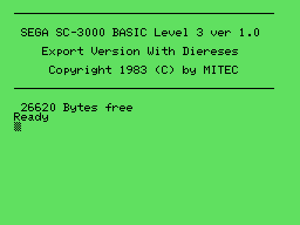

Sega SG-1000/SC-3000 Emulator for BASIC
I've created yet another emulator to be run in a Linux terminal. This time the Sega SG-1000/SC-3000 systems are the target. The main purpose is being able to run the Sega BASIC cartridges that were available for these systems. The RAM is maxed out, so BASIC Level II will report 2043 bytes available and BASIC Level III will report 26620 bytes available.
In addition to the curses support, SDL2 is also available. Both text and graphics I and II modes are supported but sprites are currently only displayed on the SDL2 graphical output. The SK-1100 keyboard is emulated, but not the joypads. There is currently also no sound support.
On the curses output side the character set is converted to the closest possible ASCII representation. A 256-color terminal is needed to get any color support. On the curses input side the entered character is converted to the appropriate SK-1100 key, and both SHIFT and CTRL is supported.
These systems run on a Zilog Z80, so the CPU emulation was copied from my CP/M emulator project and improved. There is now support for additional instructions/opcodes, IRQ handling and cycle counting.
In order to easily try out BASIC programs it is possible to inject text files as keyboard input from the built-in debugger. The input is a little slow, only one character per 16 frames, but this is needed to let the BASIC parser finish. Warp mode can be enabled, also from the debugger, to speed up this process.
Another way to load and save BASIC programs is through the emulated cassette interface. WAV files in mono unsigned 8-bit 44100 Hz can be read or written. This is also initiated from the debugger, typically in conjunction with a LOAD or SAVE command in BASIC.
You can download version 0.1 here or check the Git repo which might be more up to date.
Some screenshots:

Here is a video showing the classic BASIC maze generator program being run.